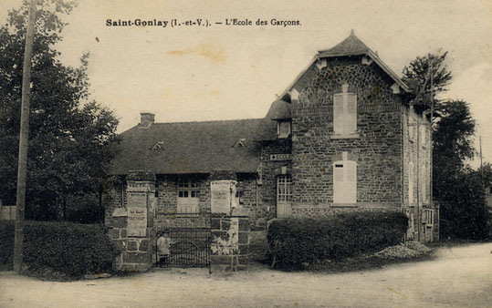

Située à 30 km de Rennes, en Ille-et-Vilaine, la maison d'école de Saint-Gonlay est une ancienne école publique construite en 1904 par Jean-Marie Laloy. Le bâtiment de cette école est resté intact depuis sa construction
Maintenant cette ancienne école est devenu un musée dans lequel est reconstitué l'école telle qu'ell étais a l'epoqueCe qui est transmis à une personne, une collectivité, par les ancêtres, les générations précédentes, et qui est considéré comme un héritage commun. Patrimoine archéologique, artistique, culturel, intellectuel, religieux; patrimoine collectif, national, social; patrimoine d'une nation, d'un peuple.
